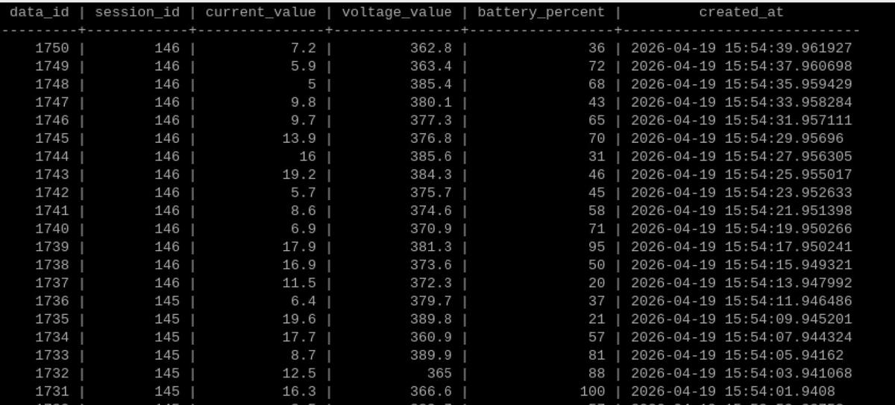
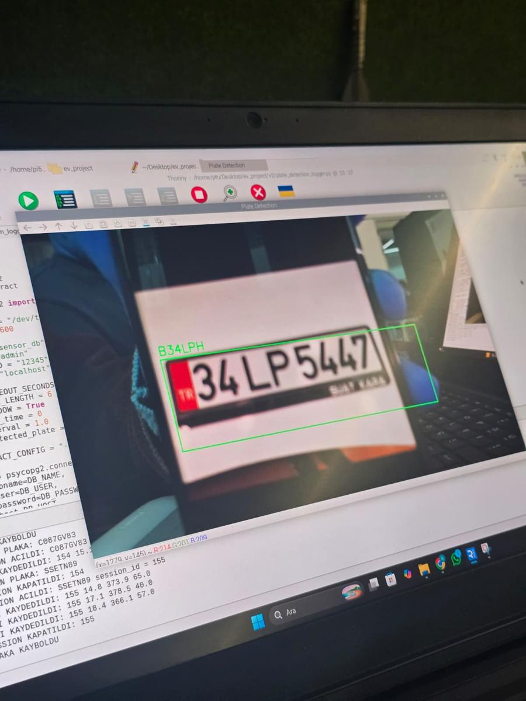
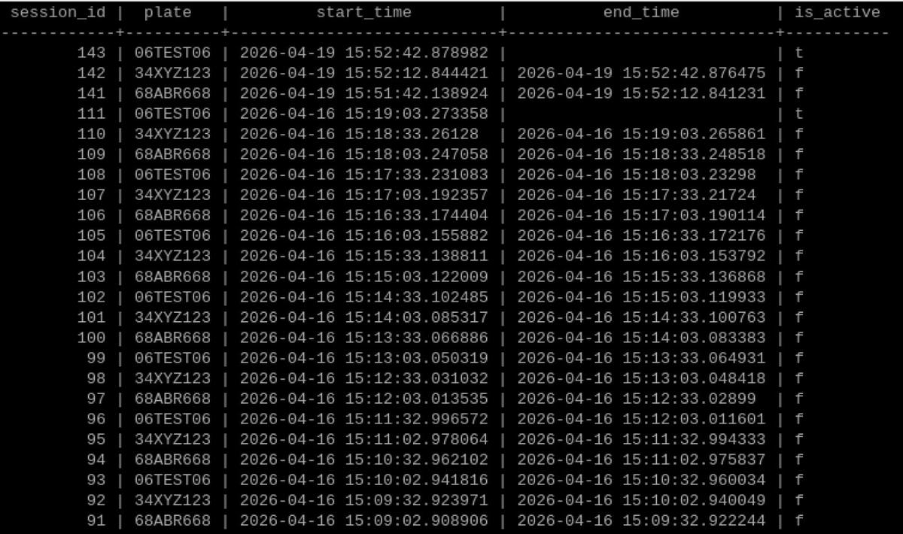

Raspberry Pi ve Veri Altyapısı: Temeli Kurmak
Bu projedeki görevim sistemin temelini kurmaktı. Kulağa sade geliyor ama "temel" derken gerçekten her şeyi sıfırdan inşa etmekten bahsediyorum.
Veritabanı: verinin bir yere gitmesi lazım
İlk iş Raspberry Pi üzerine PostgreSQL kurmak oldu. Şarj istasyonlarından gelecek verilerin — sıcaklık, nem, enerji tüketimi, doluluk oranı — düzenli bir şekilde saklanabileceği tablo yapılarını hazırladım. Henüz ortada gerçek bir donanım yoktu, ama sistem ona hazır hale geldi.

Arduino ile ilk veri akışı
Donanım tarafında Arduino ile Raspberry Pi arasında seri haberleşme kurdum. Arduino'dan simüle edilmiş sensör verileri geldi, Python bu verileri okuyup veritabanına yazdı. Gerçek sensörler olmadan önce veri akışının çalıştığını görmek istiyordum — ve çalıştı.
Plaka algılama: her araç kendi bölümünde
Sonra işin en çok ilgimi çeken kısmına geçtim: kamera ile plaka algılama. Raspberry Pi'ye bağlı kamera araç plakalarını tanıdı ve sisteme kaydetti. Her plaka için veritabanında otomatik olarak ayrı bir bölüm açıldı — giriş zamanı, sensör verileri, geçmiş kayıtlar hepsi o aracın plakası altında tutuldu. Sistem böylece çoklu kullanım için de hazır hale geldi.

Session yapısı ve REST API
Her araç sisteme girdiğinde yeni bir session başlıyor, çıkışta kapanıyor. Bu yapı sayesinde hangi aracın ne zaman geldiği, ne kadar şarj yaptığı, o süredeki tüm sensör verileri tek bir session altında izlenebilir hale geldi.

Son olarak Flask ile bir REST API yazdım. Takım arkadaşım mobil uygulamayı geliştirdi, API üzerinden veriler uygulamaya aktarıldı ve ekranda göründü. İlk defa bir başkasının kullandığı bir şey yazmıştım — bu his farklıydı.
Teknik Detaylar
Sonuç
Bu aşamada öğrendiğim en önemli şey teknik detaylar değildi aslında. Bir ekipte görev paylaşımının, zamanında iletişimin ve "bu benim işim bitti" demek yerine bütünün çalışmasını takip etmenin ne kadar kritik olduğunu gördüm.
Sonraki adım: gerçek sensörler ve optimizasyon algoritmaları.